Optimization
Samuel Burer
Last updated: October 14, 2018
Linear Programming
What is LP?
LP = Linear Programming
Not really about computer programming, although it does involve computers
In this case, programming means planning
Linear refers to the nature of the mathematical relationships involved, i.e., all relationships are defined by lines
So LP is a tool for planning, or making decisions, when the mathematical relationships are linear
A Bit of History
LP was first recognized as a useful tool by George Dantzig using the simplex method in 1947 at the Pentagon during WWII
LP was not really useful at the time because computers were too slow; it took until 1955 before benefits were realized
Since then, the use of LP has grown tremendously along with the growth of computers
All sorts of industries (manufacturing, financial, service, health, etc.) now use LP to plan their operations
The Franz Edelman Award highlights the use of optimization in industry
What is LP? (cont’d)
More than any other topic so far, LP is about you making good models of business situations
Based on your model, LP tells you the best decision
There is no probability in LP; it is deterministic
First Example
iPhone 6 vs iPhone 6 Plus

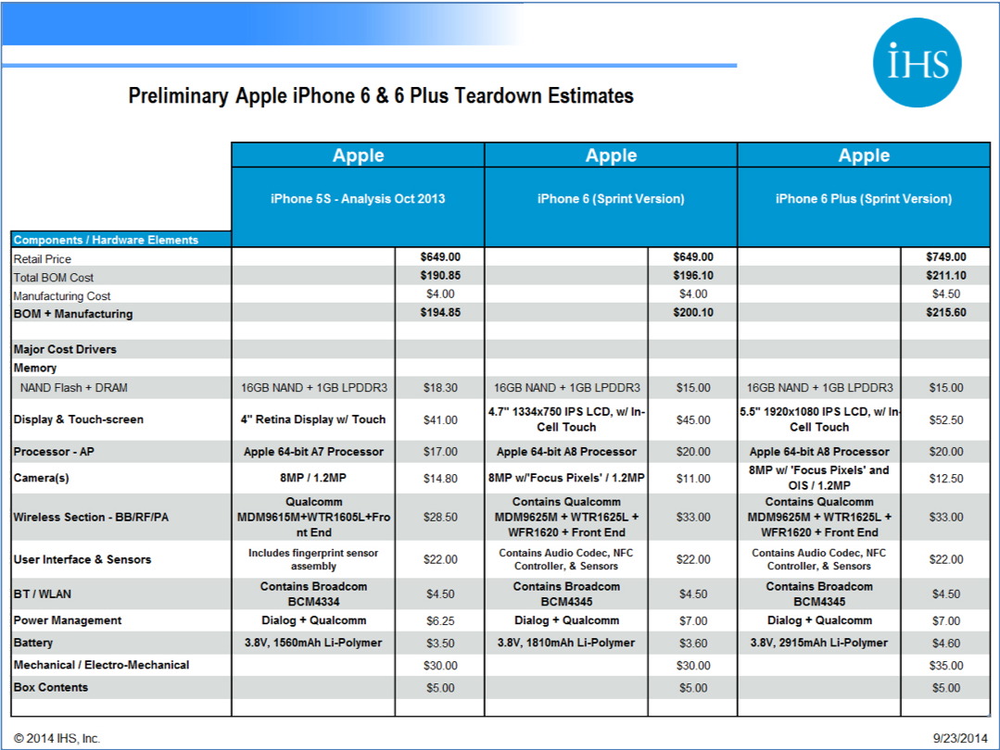
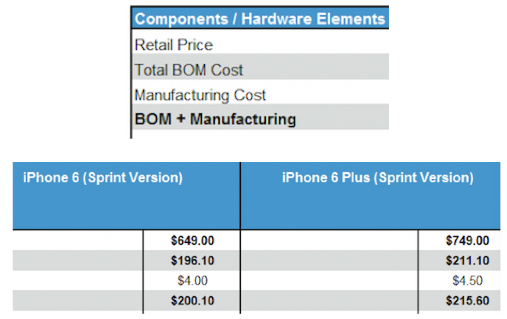
Source: IHS, Inc.
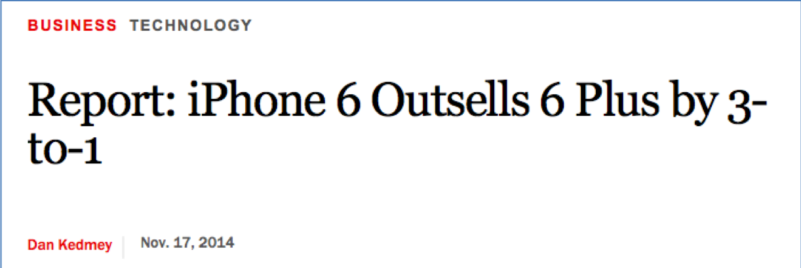
Source: Time, Inc.
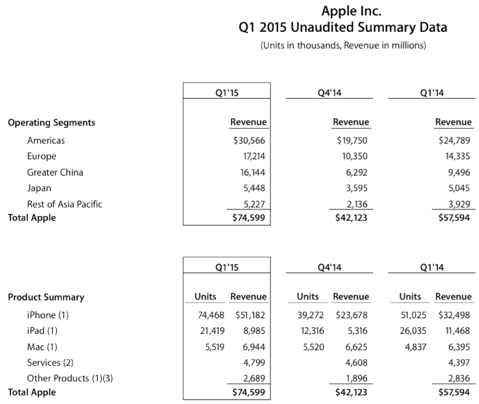
Source: Apple
How many of each phone should Apple make?
How Many of Each?
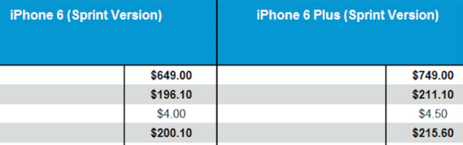
- Regular = $649.00 - $200.10 = $448.90 unit profit
- Plus = $749.00 - $215.60 = $533.40 unit profit
Decision Variables
- \(r\) = number of Regular to make
- \(p\) = number of Plus to make
Objective Function
\(\max 448.90 r + 533.40 p\)
Current model suggests to make an infinite number of units, which is clearly impossible. What are we missing?
Even if we could make an infinite number, we couldn’t sell them all because of limited demand.
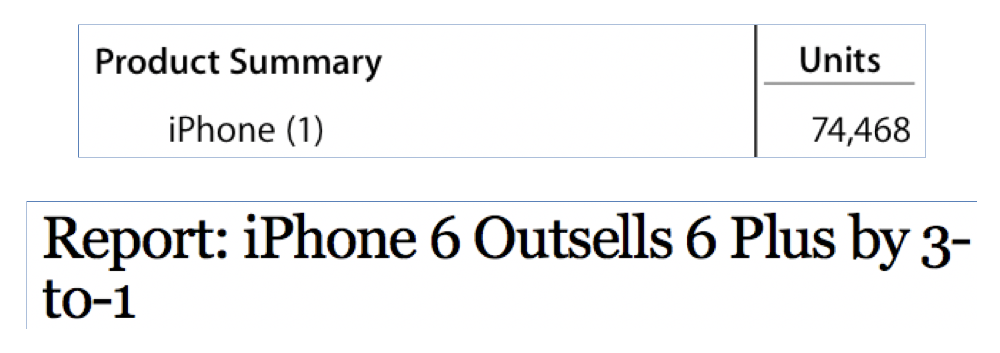
Companies such as Apple always forecast demand. Let us say that demand will be 74,500,000 units with a 3:1 split between Regular and Plus.
Demand Constraints
\[\begin{align*} \max \ \ &448.90 r + 533.40 p \\ \text{s.t.} \ \ \ \ \ &r \le 55875000 \\ &p \le 18625000 \end{align*}\]
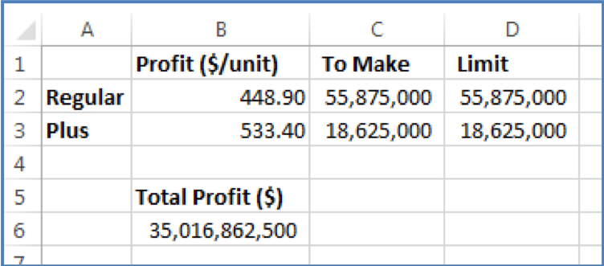
The best solution is to make as many as you can sell. Makes sense, but what if…
Source: PC Magazine
- Glass usage
- Regular = 9.4 sq in
- Plus = 12.9 sq in
- Apple’s glass supplier has only 650,000,000 sq in of glass available
Supply Constraint
\[\begin{align*} \max \ \ &448.90 r + 533.40 p \\ \text{s.t.} \ \ \ \ \ &r \le 55875000 \\ &p \le 18625000 \\ &9.4 r + 12.9 p \le 650000000 \end{align*}\]
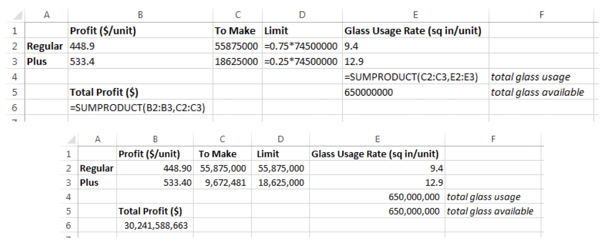
But what if Apple’s supplier loses one of its two factories due to an earthquake? (Seriously.)
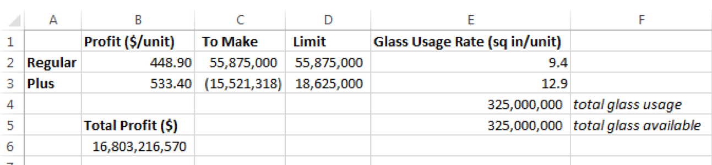
But it doesn’t make sense to make a negative number of units. How to fix?
Nonnegativity Constraints
\[\begin{align*} \max \ \ &448.90 r + 533.40 p \\ \text{s.t.} \ \ \ \ \ &r \le 55875000 \\ &p \le 18625000 \\ &9.4 r + 12.9 p \le 650000000 \\ &r \ge 0, \ \ p \ge 0 \end{align*}\]
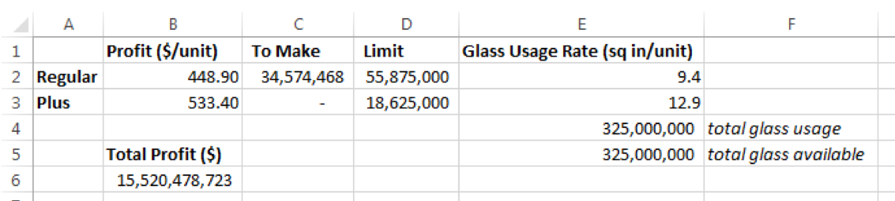
Definitions
Decision Variables
The quantities that are unknown but we wish to determine
All other quantities in the situation depend on the decision variables (e.g., profit, resources used)
Every LP has decision variables, and they must be identified ASAP in the modeling process
Objective Function
The quantity that we would like to maximize or minimize (e.g., profit or cost)
Written as a linear expression of the decision variables
Constraints
The limitations imposed on the decision variables
Written as a linear expression of decision variables that is \(\le\), \(=\), or \(\ge\) some number
That “some number” is called the right-hand side
Nonnegativity Constraints
Special constraints that say the decision variables must be restricted nonnegative values (0 or positive, not negative)
Very natural constraints that occur in most LP problems
Since nonnegativity constraints are very common, we will assume them unless otherwise stated
Output of Excel’s Solver
When Solver finishes, it gives you one of three messages:
- “Solver found a solution” (good!)
- “Solver could not find a feasible solution” (bad)
- “The Set Cells values do not converge” (bad)
When either of the last two occur, most likely something is wrong with your model. Double-check for errors!
More Examples
Example 2
Bank Cashy has only three types of assets, loans (X), market investments (Y), and real estate (Z). A total of $700,000 is to be allocated between X, Y, and Z. For diversification, Bank Cashy wishes its loans to equal at least $250,000 and its market investments to be at least 30% of X + Z. The bank expects to earn 7% on its loans, 9% on its market investments, and 11% on real estate.
Formulate an LP to maximize earnings, and then setup and solve the model in Excel.
\[\begin{align*} \max \ \ &0.07 X + 0.09 Y + 0.11 Z \\ \text{s.t.} \ \ \ \ \ &X + Y + Z \le 700000 \\ &X \ge 250000 \\ &Y \ge 0.3 (X + Z) \\ &X, Y, Z \ge 0 \end{align*}\]
Example 3
The J.F. Pluckett Company manufactures furnaces at three different plants and sells these furnaces at four different sales outlets. The number of furnaces constructed at each plant is 10, 15, and 11 (per week). Company policy requires that 9 furnaces be sent to each sales outlet (per week ). The problem is to determine a shipping schedule for the furnaces (from plants to outlets) that minimizes total transportation costs. The costs for shipping a single furnace from plants to outlets are shown next (in dollars).
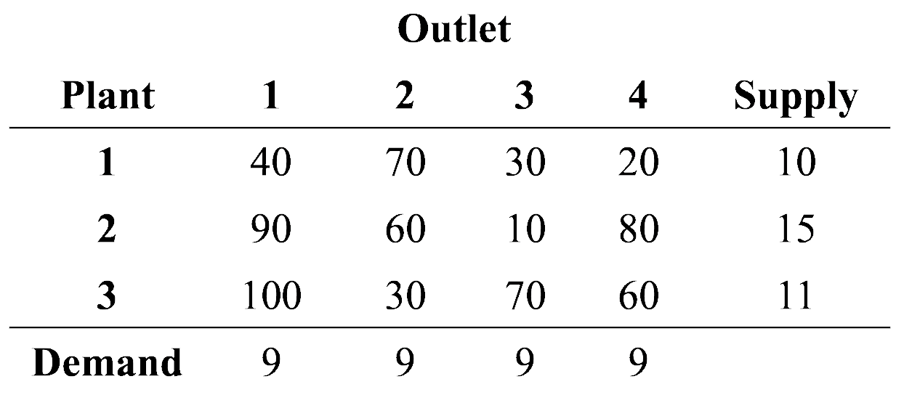
Find the shipping schedule that minimizes costs per week.
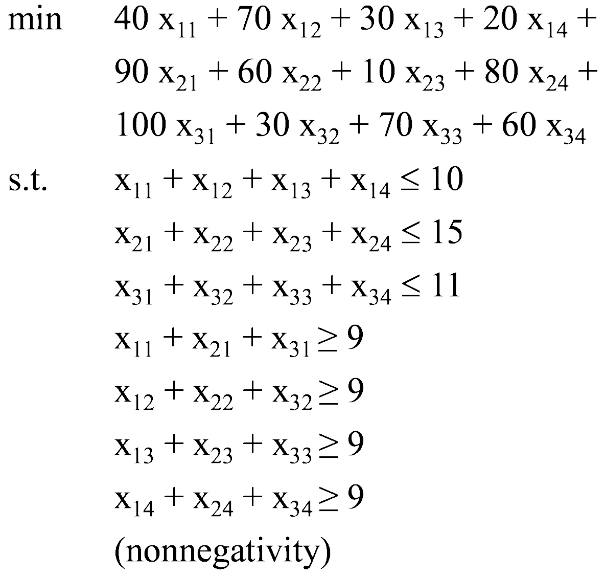
\(x_{ij}\) is the amount shipped from plant \(i\) to outlet \(j\)
Transportation Problems
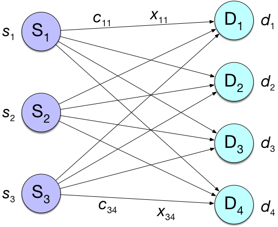
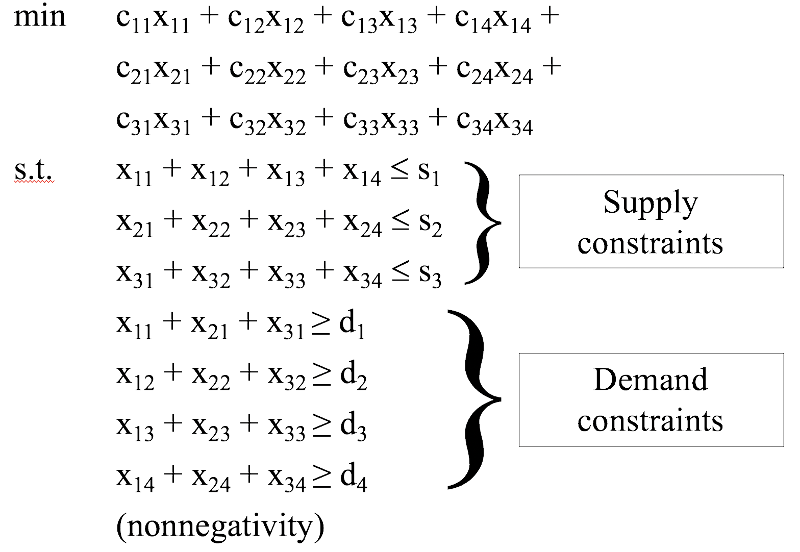
Note: A transportation problem is feasible only if total supply exceeds total demand!
Group Exercise
Sunco Oil produces oil at two wells in Texas. Well 1 can produce up to 150,000 barrels per day, and well 2 can produce up to 200,000 barrels per day. Oil is shipped from the wells to New York and Atlanta via three separate intermediate cities, C1, C2, and C3. NY requires 160,000 barrels per day, and ATL requires 140,000 barrels per day. The costs (in $) of shipping 1000 barrels between two points are shown below. Formulate an LP to minimize the transportation costs in meeting the oil demands of NY and ATL.
| from/to | C1 | C2 | C3 |
|---|---|---|---|
| W1 | 10 | 13 | 25 |
| W2 | 15 | 8 | 18 |
| from/to | NY | ATL |
|---|---|---|
| C1 | 12 | 13 |
| C2 | 30 | 17 |
| C3 | 8 | 10 |
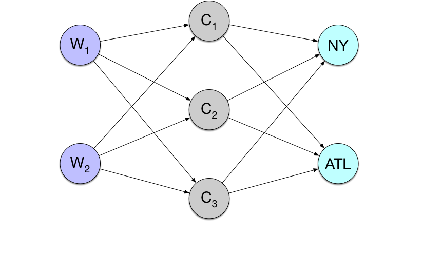
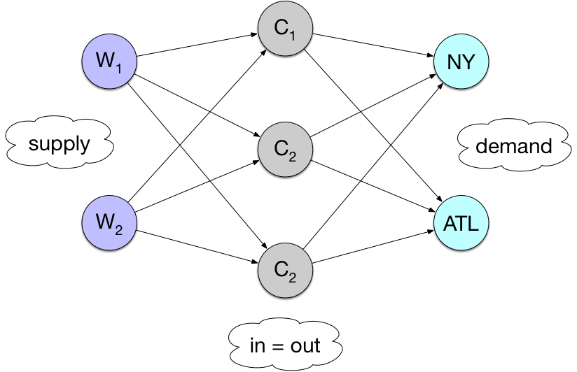
Example 4
- This spring, you must decide how to divide your 2000 acres between corn and soybean. For fairly even crop rotation, each must be planted at least 500 acres.
If the growing season is warm, the expected profits per acre are: corn $30, soybean $20
If cool: corn $23, soybean $25
- You are risk averse. How many acres of each crop should you plant in order to maximize profit?
Variables
- C = number of acres of corn
- S = number of acres of soybean
Constraints
- \(C + S = 2000\)
- \(C \ge 500\)
- \(S \ge 500\)
Objective functions (two of them!)
- Warm profit: \(30 C + 20 S\)
- Cool profit: \(23 C + 25 S\)
How do we deal with two objective functions?
Because risk averse, consider the concept of guaranteed profit, or worst-case profit
If we plant specific values \(C\) and \(S\), then what is the worst profit we could experience?
\(G = \min\{ 30 C + 20 S, 23 C + 25 S \}\)
So let’s try to choose \(C\) and \(S\) so that \(G\) is maximized
\[\begin{align*} \max \ \ & G \\ \text{s.t.} \ \ \ \ \ & C + S = 2000 \\ & C \ge 500, \ S \ge 500 \\ & G = \min \{ 30 C + 20 S, G \le 23 C + 25 S \} \end{align*}\]
\[\begin{align*} \max \ \ & G \\ \text{s.t.} \ \ \ \ \ & C + S = 2000 \\ & C \ge 500, \ S \ge 500 \\ & G \le 30 C + 20 S \\ & G \le 23 C + 25 S \end{align*}\]
Key idea: Software will increase \(G\) until it hits minimum of two profits!